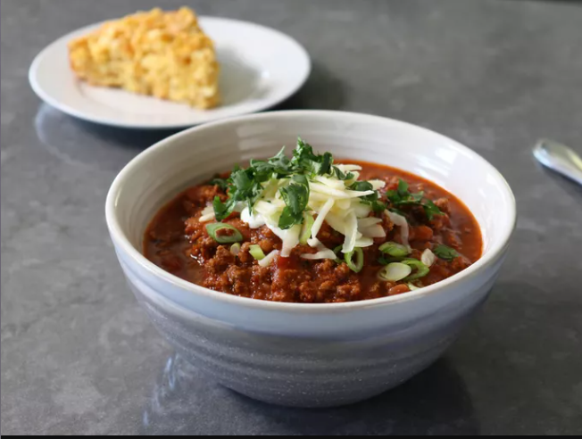

Lazy Hazy Beef Chili

Description
The Lazy Hazy Beef Chili recipe is a hearty and comforting dish featuring tender chunks of beef simmered in a flavorful blend of spices, tomatoes, beans, and vegetables.
It's called "lazy" because it's easy to make with minimal effort, perfect for a cozy weeknight dinner or a relaxed weekend meal.
The "hazy" likely refers to the rich, warming aroma that fills the kitchen as it cooks. Overall, it's a satisfying and fuss-free chili that's sure to please the whole family.
Ingredients
- 2 pounds ground beef
- 2 tablespoons chili powder, or to taste
- 1/4 teaspoon ground chipotle
- 1/2 teaspoon freshly ground black pepper
- 2 teaspoons kosher salt, plus more to taste
- 1/8 teaspoon ground cinnamon
- 12 ounces hazy IPA beer
- 2 teaspoons white sugar
- 1/2 teaspoon dried oregano
- 1/4 teaspoon garlic powder
- 1 (14.5 ounce) can diced fire-roasted tomatoes with green chilies
- 2 (16 ounce jars) extra chunky salsa
- 2 (15 ounce) cans pinto beans, drained
Toppings
- 1/2 cup sour cream
- 1/2 cup sliced green onions
- 1 cup shredded sharp Cheddar cheese
- 1/2 cup chopped cilantro
Steps
- Add beef to a dry cold pot, and turn heat to high.
- When beef begins to sizzle, break up into small pieces with a potato masher or spatula. Meat can be broken up into very fine crumbles, or into larger chunks, depending on the desired texture. Continue to cook and break up beef until no longer pink, about 7 minutes.
- Add chili powder, chipotle, black pepper, salt, and cinnamon to the pot. Cook, stirring, for 1 minute, then pour in beer.
- Stir, scraping the browned bits from the bottom of the pot as you do. Let mixture boil until liquid is reduced by about half, 2 to 3 minutes.
- Add sugar, oregano, garlic powder, diced tomatoes and jarred salsa. Stir in; return mixture to a simmer.
- Stir in beans, reduce heat to medium-low, and cook, stirring occasionally, until chili is thickened and flavor is developed to your liking, about 1 hour.
- Taste, adjust the seasoning. Top with sour cream, green onions, Cheddar cheese, and cilantro as desired.